为什么大家都在用 AI Agent，有的人只是多了一个助手，有的人却把它用成了一套团队协作系统。
从找到现成能力开始，逐步沉淀、组合，最后让它持续工作。
先问：有没有现成能力已经把这件事做掉。
现成 Skill 不贴合，就把自己的流程封装出来。
多个 Skill 按顺序、条件和规则协作。
让稳定能力持续运行，变成团队习惯。
接任务、拆任务、派任务
理解你到底想干嘛
把某一类事情真正做完
把外部数据、工具和系统接进来
告诉 Agent 什么情况该用哪套方法
本地 OpenClaw 出问题时，负责排查、修复和重跑
你不需要知道每个 App 底层怎么写，但你知道拍照该调用相机，发消息该调用聊天工具。
只要有重复工作，只要有流程，就有机会被封装成 Skill。
批量粗剪几百小时视频素材
批量生成视频、海报和文案
用手机先跑一轮市场调研
定时看用户情绪，复盘反馈
分析 JD、候选人和面试题
第一反应是先问：有没有已经封装好的 Skill。
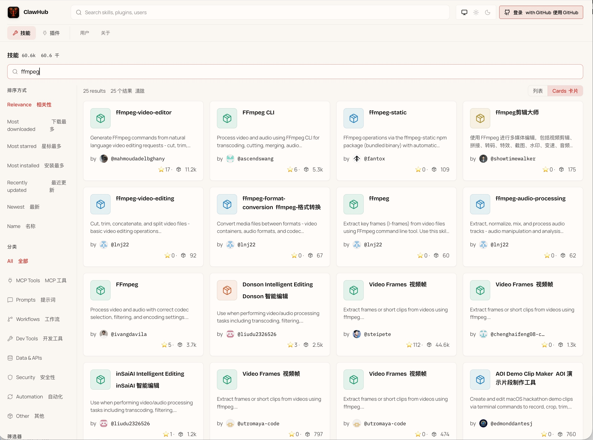
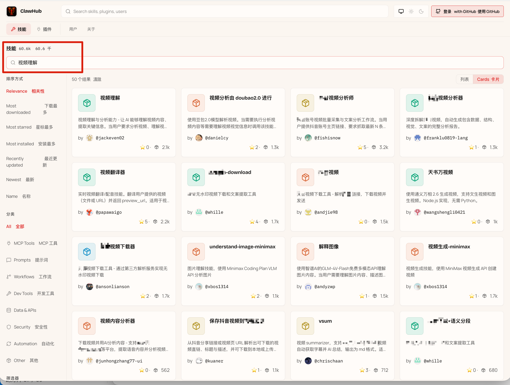
## Video Understanding Skill
Use when the user needs to inspect local video, extract frames, summarize key moments, or prepare visual evidence for model reasoning.
Inputs: local file path, URL, frame interval, output directory, transcript option, model mode, cost control, language preference.
Dependencies: ffmpeg, ffprobe, optional speech recognition, local cache, metadata parser, frame sampler, summary writer.
Steps: validate media, inspect duration, sample frames, generate index, run description pass, merge timestamps, write markdown report.
Warnings: long videos may require chunking. External APIs may increase cost. Local processing is preferred when privacy matters.
Output: image sequence, timestamp notes, summary, suggested next action, reusable task log.
当现成 Skill 覆盖不了你的场景时，就把自己的方法封装成新的 Skill。
自建 Skill 不是为了炫技，而是让能力贴合自己的成本、素材和工作环境。
简单的时候，它只是把一类任务的写法固定下来。
复杂的时候，它可以把工具、依赖、流程和交付方式装进去。
群聊、文档、日程、资料整理，都可以成为 OpenClaw 调用的能力。
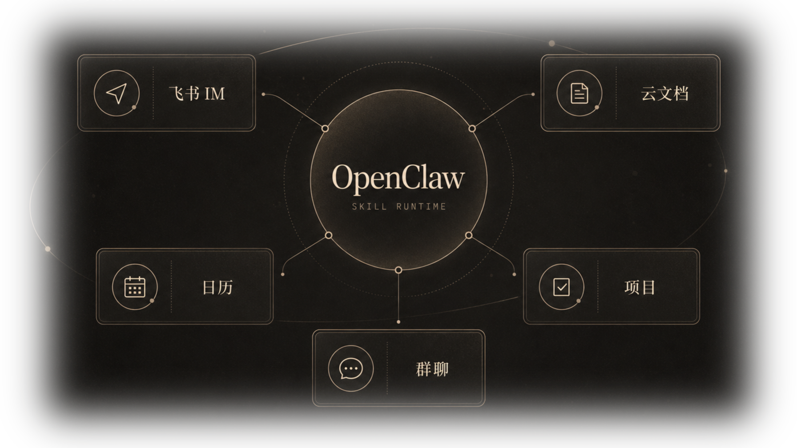
总结每天群聊重点，批量下载图片和文件。
安排会议、排期、同步云文档。
拉取外部信息，生成表格，更新旧文档。
同样是文字生成，长文案、短文案、广告语、品牌物料，背后的判断逻辑和处理方式都不一样。
先梳理结构，再生成正文。
直接给多版本，快速筛选。
先抓卖点，再压缩成一句话。
先把风格、语气和素材展开。
保留感觉，再压到可用长度。
直接走 Humanizer 会太模板。
长文、短文、发布文案先有统一基底。
海报、AI 视频、展示物料、品牌网页继续往后接。
不是生成几段文字，而是连续产出物料。
装得越多，越难记住每个 Skill 适合什么。
相似能力同时出现，模型会在入口之间摇摆。
不是所有路径都一样稳，也不都适合交付。
把选择逻辑写清楚，Agent 才不会靠猜。
Hermes 先回顾你过去怎么拆任务、确认和交付。
每一步匹配一个最合适的 Skill。
把调用顺序、确认节点、发布或回传位置固定下来。
一个看细节，一个跑规模；先判断任务大小。
探索阶段多出版本；定稿后回到稳定流程。
跑通一次，只是开始。真正放大价值，要靠批量运行和定时运行。
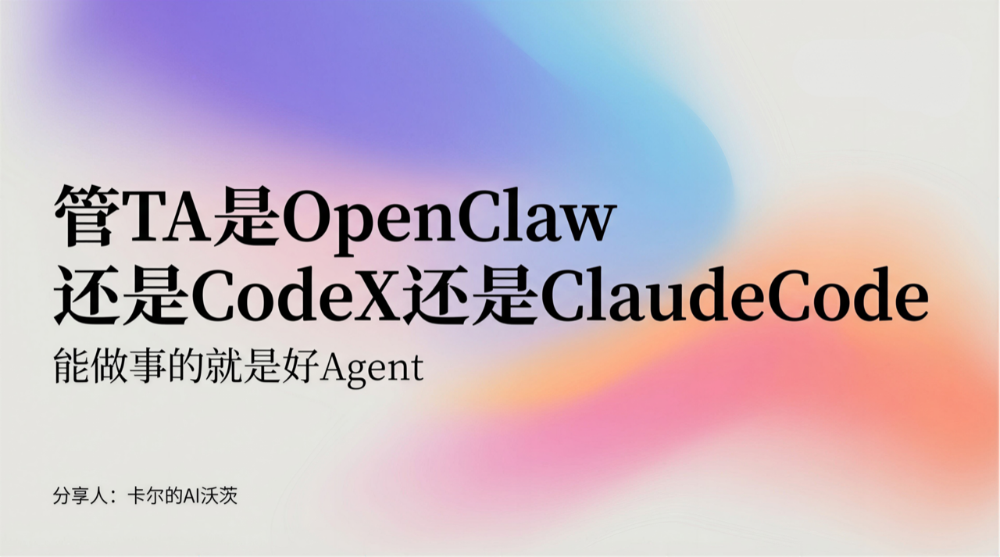
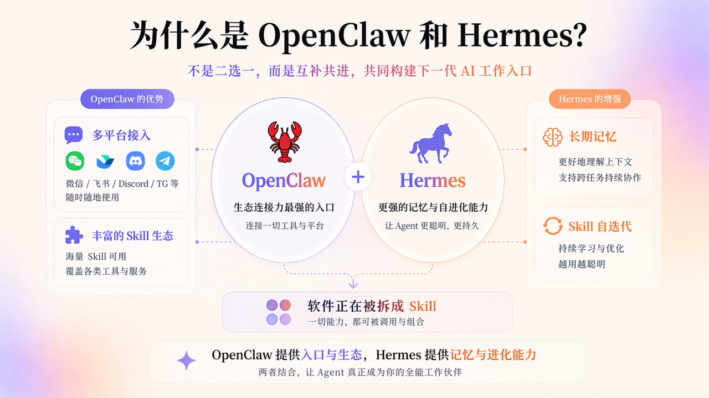
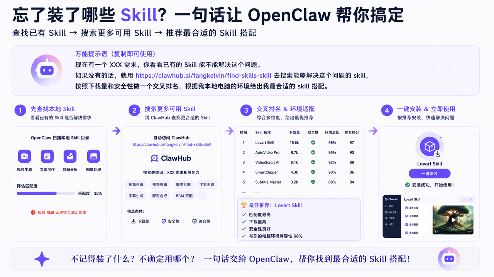
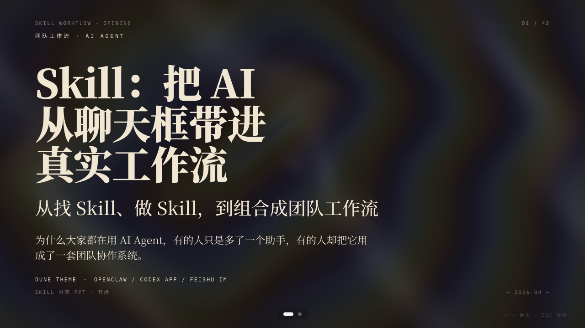
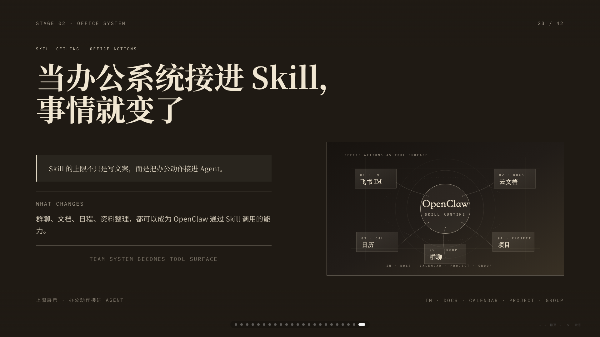
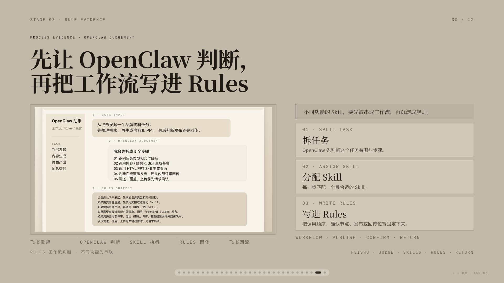
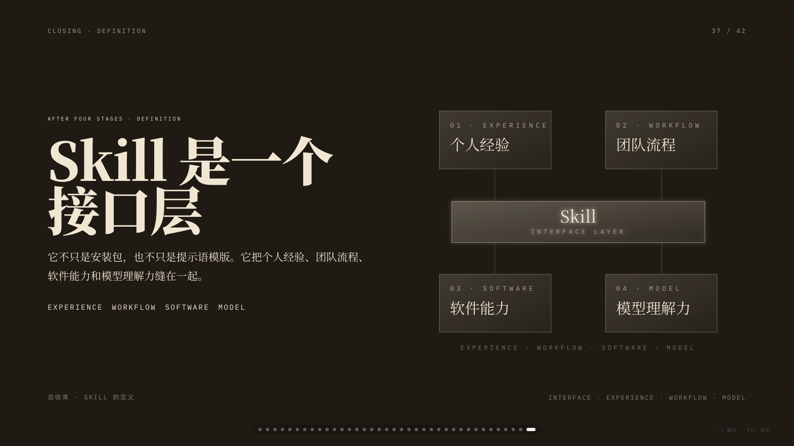
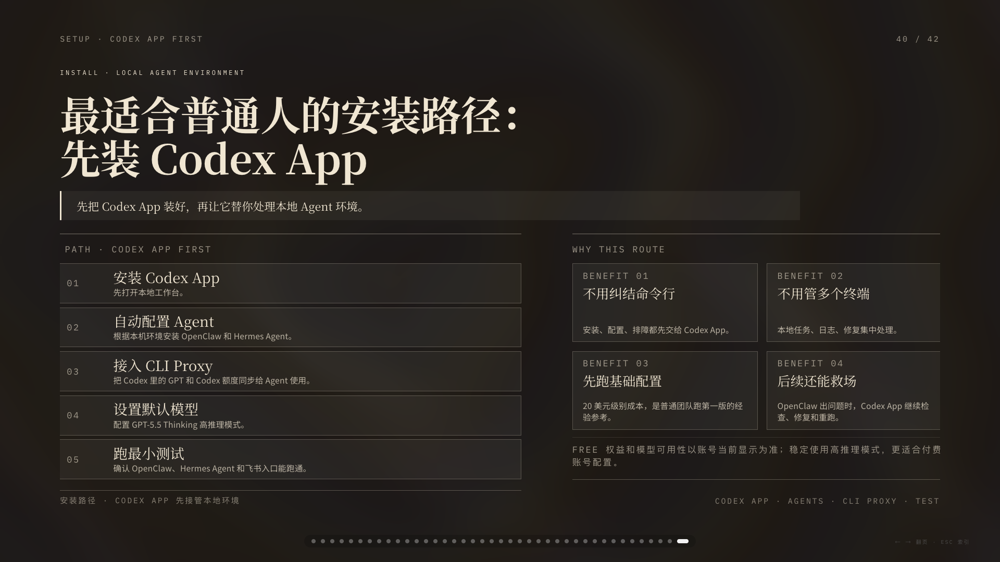
单个能力可以批量跑，工作流也可以批量跑。
抓数据、选素材、读评论、整理洞察，可以串成一条流程。
每次换一个话题或平台，仍然跑同一条工作流。
先把候选内容抓回来。
按播放量、互动和话题筛掉噪音。
把评论区重写成可读的需求和疑问。
给运营或产品一份可行动的结果。
只要任务开始每天自动跑，故障就一定会出现。问题不是会不会出错，而是出错之后谁来快速定位、修复和重跑。
它不只是安装包，也不只是提示语模版。它把个人经验、团队流程、软件能力和模型理解力缝在一起。
OpenClaw 卡住了、本地环境坏了、日志看不懂了，这时候让 Codex App 进来排查。
安装、配置、排障都先交给 Codex App。
本地任务、日志、修复集中处理。
20 美元级别成本，是普通团队跑第一版的经验参考。
OpenClaw 出问题时，Codex App 继续检查、修复和重跑。